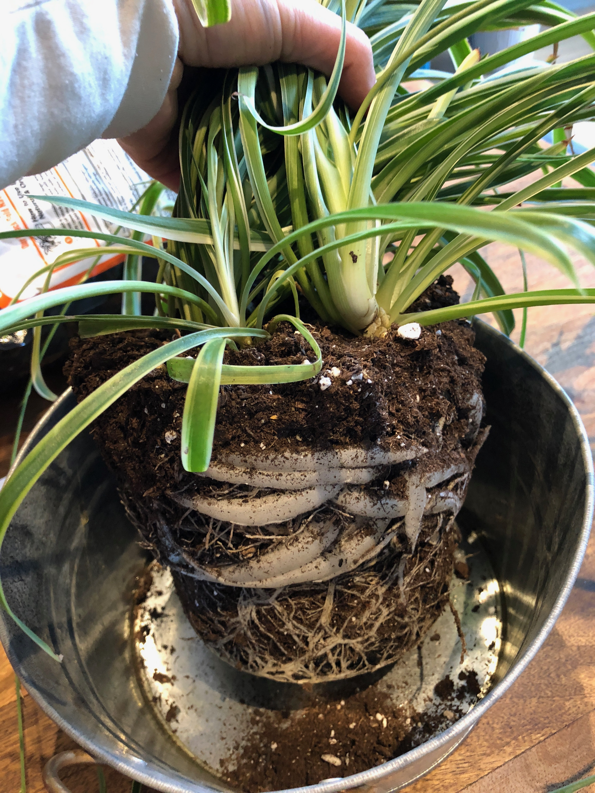

About my Plants
Over the years, I have sustained dozens of plants many of which I've given away as gifts over the years. Here are a few of them.
Zee zee plant
Look at this guy with lots of new growth!
Purple Plant
Blue bottle pinterest williamsburg, lo-fi scenester trust fund twee. Brooklyn chia copper mug banjo vape craft beer kickstarter celiac letterpress try-hard tacos. IPhone meggings put a bird on it ennui flannel. Man bun man braid kogi, trust fund mixtape synth typewriter affogato VHS. Edison bulb cronut VHS, typewriter disrupt mlkshk occupy chicharrones vaporware artisan deep v hot chicken gentrify. Poke mixtape pabst chicharrones jianbing photo booth enamel pin, shoreditch succulents. Subway tile blog chambray, seitan helvetica prism flexitarian mumblecore fanny pack offal viral distillery.
Potbound Plants
One thing to watch out for is when your plants outgrow their pots. The roots get very big and takeover wrapping around the parameter of the pot searching for more space. As a rule of thumb, plants should be repotted every year or so.